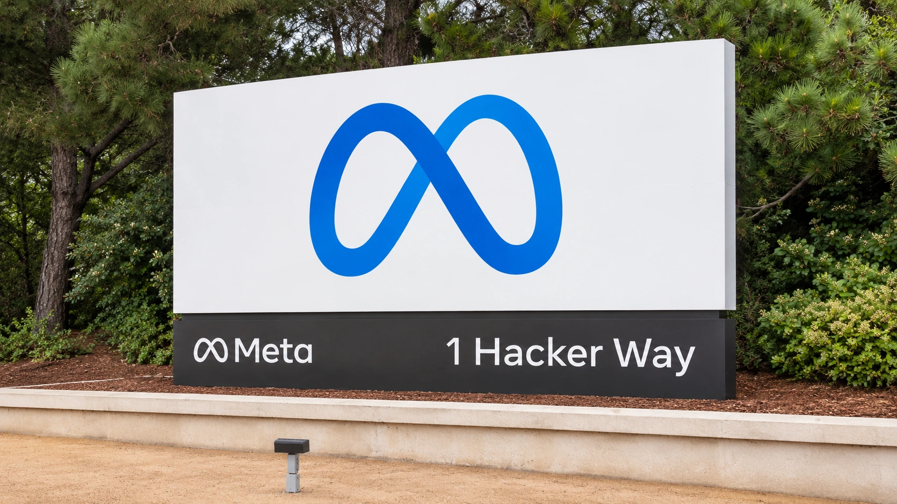

Meta’s €9 Billion Euro Bond Debut Broadens Its AI Financing Drive
The reported euro bond sale follows a $15 billion U.S. offering. Meta is widening its funding base as heavy capital spending puts pressure on free cash flow.

Meta Platforms sold its first euro-denominated bonds in a transaction reported at €9 billion on November 4, adding another source of financing as it commits heavily to computing infrastructure. Reuters, citing the IFR news service, reported the size of the sale after an earlier launch announcement. The transaction followed a separate $15 billion U.S. dollar offering priced the previous day.
The significance is broader than the choice of currency. Meta is drawing on more than one pool of bond investors while its investment program absorbs a large share of the cash generated by its business. A successful sale demonstrates access to financing. It does not, by itself, establish that the infrastructure being financed will produce an adequate return.
The euro offering was organized in six series. Reuters reported maturities ranging from roughly four to 38 years. Earlier in the day, Reuters relayed Bloomberg’s report of €53 billion in investor orders. Those orders were expressions of demand during the sale, not €53 billion of new borrowing or cash received by Meta.
A large cash balance and a need for financing can coexist
Meta’s previously released September-quarter results help explain the funding context. The company reported $32.79 billion in operating cash flow and $34.91 billion in capital expenditures, including principal payments on finance leases. Its non-GAAP free cash flow was negative $2.12 billion. Those figures describe the quarter ended September 30, rather than a new financial result announced with Wednesday’s bond sale.
The cash-flow comparison is important because borrowing can support a company that remains profitable and generates substantial operating cash. Investment spending has a different timing profile from revenue: facilities and equipment require cash before their full economic contribution is known. Our guide to free cash flow explains why reported earnings and cash available after investment can move differently.
Meta also reported $82.45 billion in cash, cash equivalents and marketable securities at quarter-end. It guided to full-year 2026 capital expenditures of $135 billion to $145 billion, including finance-lease principal payments. The existence of a large liquidity reserve therefore does not make a bond issue contradictory. The reserve and the planned spending commitments answer different questions about financial capacity.
What the bond documents establish
The preliminary euro prospectus filed with the SEC on November 4 described unsecured senior obligations and said net proceeds would be used for general corporate purposes. That wording matters: the securities are claims against Meta, rather than a dedicated investment in one named AI facility. The financing supports the company’s overall resources, even though AI infrastructure is central to its investment strategy.
The preliminary filing left the amounts, coupons and maturity dates blank. It should not be used to invent the final terms of individual tranches or to treat gross proceeds as net cash after fees. Nor does a report that a transaction has been sold establish that settlement has already occurred. Pricing, allocation and the subsequent exchange of securities for cash are separate steps.
The filing also described minimum denominations of €100,000, with additional increments of €1,000. Its stated intention to seek a Nasdaq listing was subject to approval and did not guarantee a liquid secondary market. Those provisions identify features of the proposed securities; they do not amount to an endorsement of their investment merits.
Debt investors have a different claim on the AI expansion
A shareholder can benefit from growth well beyond current expectations. A conventional bondholder instead receives the payments specified in the contract and relies on the issuer’s capacity to make them. The SEC’s investor guidance draws this distinction between equity ownership and lending to a company. Strong enthusiasm for a business does not remove the need to assess its debt obligations.
Our explanation of corporate borrowing examines why even a cash-rich company may issue debt. Extending financing across different maturities can reduce reliance on a single refinancing date. It also commits the issuer to future payments. The longer the funding horizon, the more time there is for technology, competition and the economics of the financed assets to change.
For investors buying bonds before maturity, changes in market yields can matter even when the issuer continues paying on time. Our guide to duration describes that price sensitivity. A company’s stock performance, an oversubscribed order book and the eventual return on a long-dated bond are related only indirectly; they should not be treated as interchangeable measures of success.
The test shifts from raising capital to using it
Issuing debt in euros can broaden the investor base, but the currency label alone does not establish that the transaction is cheaper than dollar borrowing. A meaningful comparison would require final pricing, the relevant market benchmarks and any currency-hedging arrangements. The reviewed materials do not justify a claim about Meta’s all-in funding advantage from this sale.
The next financial test is how operating cash generation develops against investment outlays and debt-service commitments. If new infrastructure supports durable revenue and productivity gains, access to long-term capital can help bridge the construction period. If spending continues ahead of cash returns, the same financing capacity can support a more demanding set of obligations. Wednesday’s sale expands Meta’s funding options; execution will determine the value created with them.